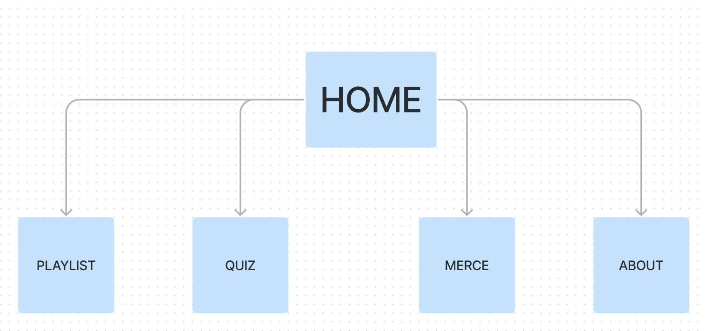
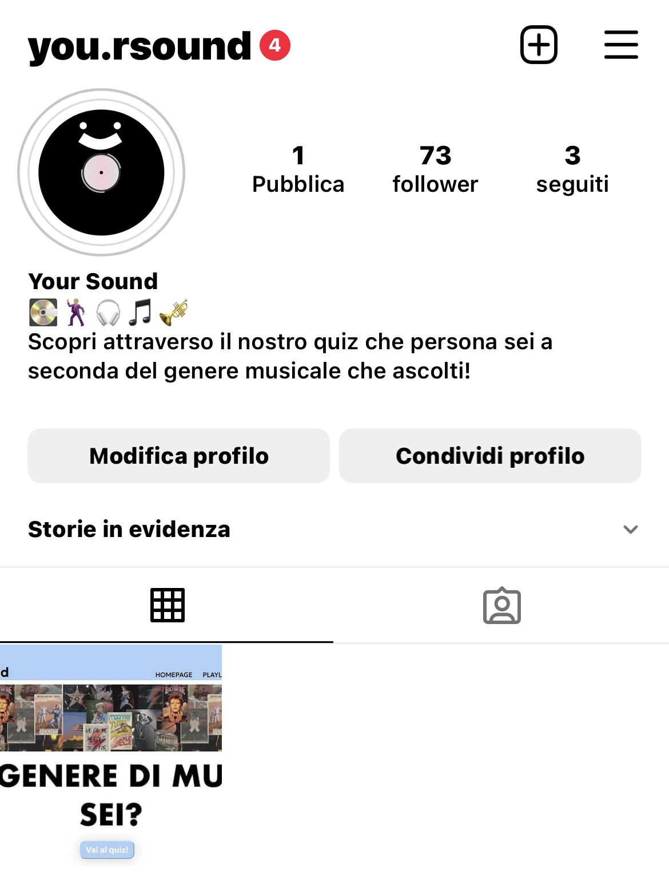
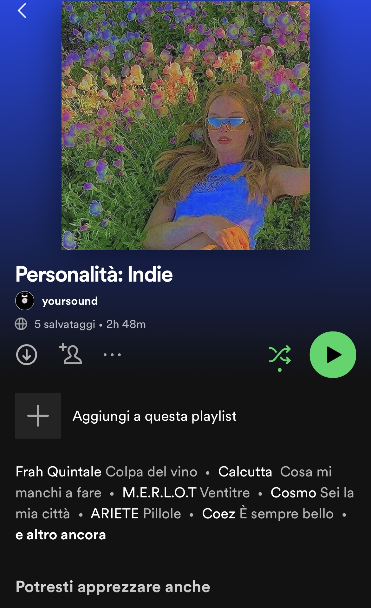

DOCUMENTAZIONE
Abstract
YourSound è un sito che consente di scoprire, attraverso un quiz, la propria personalità musicale.
L'obiettivo è quello di intrattenere l'utente e far scoprire nuovi contenuti.
A differenza degli altri siti, YourSound usa il linguaggio della generazione z e cerca di creare una community di ascoltatori con gusti musicali eterogenei
Project management plan
Benchmarking
OBIETTIVI: L’obiettivo del sito è quello di intrattenere gli utenti con un simpatico quiz, da cui emergerà la loro personalità legata al genere musicale che più li rispecchia. La piattaforma, inoltre, consiglia una playlist appositamente creata per ogni personalità musicale che può emergere dal quiz
TARGET UTENTE: Il sito vuole rivolgersi in particolare alla fascia d’età che va dai 12 ai 30 anni, senza discriminazioni di genere.
YourSound, in realtà, può rivolgersi potenzialmente ad un pubblico più vasto, che però – se non rientra nel target sopracitato – potrebbe avere difficoltà nella comprensione delle categorie risultanti dal quiz.
COMPETITORS: Sul web esistono già alcune piattaforme su cui svolgere quiz in grado di rilevare quale genere musicale rappresenti l’utente. Tra queste, sono da evidenziare:
- paginainizio.com e it.survley, che però si possono definire datati per quanto riguarda la grafica, le domande dei quiz e i generi musicali risultanti;
- alfemminile.com, che però – come è facilmente intuibile dal nome – si rivolge prettamente a un target femminile;
- Infine, il quiz di quiztest.supertv.it, il cui target comprende una fascia d'età piuttosto bassa, e le cui domande non possono sicuramente definire un genere di musica.
Struttura e Layout
Struttura ad albero del sito:

Wireframe:


Look and feel
L'identità del sito emerge dai colori rappresentativi e dalla grafica minimalista. I colori riccorrenti sono tre: il bianco, una tonalità pastello dell'azzurro (#acd1fb) e una più scura (#4f81c7). La scelta di ricorrere soltanto a queste tre tonalità è stata presa al fine trasmettere un senso di ordine e coerenza all'utente, che in questo modo potrà orientarsi meglio all'interno del sito. Il carattere del sito è inoltre formato dalle due font ricorrenti: Geologica (san-serif) – usato per i titoli e il menù di navigazione – e RobotoSlab (serif) – usato invece per i testi scritti.
Linguaggi e strumenti
I linguaggi utilizzati nella creazione del sito sono HTML e CSS. Gli strumenti utilizzati sono:
- GoogleFonts, per la scelta delle font utilizzate;
- Figma, per alcuni aspetti di grafica, per la realizzazione dei wireframe e per la creazione del logo;
- Typeform, per la creazione di un quiz funzionante;
- Picsart, per l'editing delle foto;
- Spotify, per le Playlist;
- Instagram, per la sponsorizzazione del sito;
- FontAwesome, per le icone;
-Pinterest, per la ricerca di immagini.
Communication strategy
1. Background
Sono numerosi i siti che offrono test per valutare il proprio genere musicale sulla base di alcune domande sulla personalità o preferenze di gusto. Tuttavia, nessuno dei siti incontrati offre servizi inerenti al tema del test effettuato, se non la proposta di ulteriori quiz di vario argomento.
I siti dei competitor sono colmi di banner che distolgono l’attenzione dal tema centrale e non concedono all’utente di approfondire il proprio repertorio musicale o di conoscere nuovi generi e canzoni.
Nel nostro sito abbiamo deciso di aggiungere un repertorio di playlist con 50 brani ciascuna, un elemento che concede all’utente di proseguire l’esperienza all’interno del sito ed approfondire la tematica del quiz.
2. Obiettivi comunicativi
L’obiettivo del sito è quello di fornire un servizio di intrattenimento.
Per questo il sito è stato strutturato in modo semplice ed essenziale. L’utente non deve perdersi nel sito, ma raggiungere con facilità il quiz e svolgerlo.
Collegato ad esso, il secondo obiettivo è quello di diffondere nuovi brani e mettere a conoscenza gli utenti di nuovi generi tutti da esplorare.
È stata aggiunta una sezione in cui indipendentemente dal risultato del test, si possono curiosare le varie playlist ed espandere il proprio repertorio musicale: con la riproduzione casuale di spotify ci si può lasciare stupire da brani non noti.
Obiettivi di comunicazione:
- 70 followers sulla pagina instagram
- 5 salvataggi ad ogni playlist
-100 visite al sito
3. Target audience e messaggio
Target:
- under 30, giovani che ascoltano musica e la condividono sui social
- gruppo raggiunto attraverso l’uso dei social
- template da pubblicare sul canale social dell’utente dopo aver svolto il quiz
Messaggio:
- Diffondere nuovi generi musicali in gruppi di giovani che potrebbero ancorarsi ad un’unica cultura di appartenenza
- Rendere note culture musicali che possono avere rilevanza storica o sociale
- Dare input che nella fruizione quotidiana della propria playlist non si ottengono
- Rendere gli utenti più consapevoli dell’ampiezza del panorama musicale
4. Promozione
Utilizzo di social come Instagram e Spotify. Sfruttando le potenzialità che questi social hanno di interagire con i contenuti proposti dal nostro sito.
5. Valutazione dei risultati
Sulla base degli obiettivi impostati nel punto 2.
I canali social hanno raggiunto gli obiettivi comunicativi impostati.
Instagram:

Spotify:
